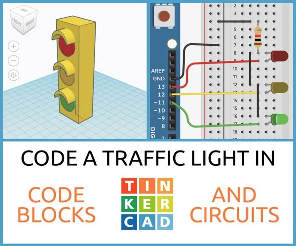

🌱 Manual de Documentación: ¿Qué es Tinkercad y cómo usarlo en proyectos agrícolas?
¡Hola, estudiante! 👋
Si te gusta crear, diseñar y experimentar con tecnología, Tinkercad es una herramienta que te va a encantar. Es súper fácil de usar, no necesitas ser un experto y ¡es gratis! Vamos a explicarte todo lo que necesitas saber para empezar a usarlo en tus proyectos agrícolas.
🤔 ¿Qué es Tinkercad?
Tinkercad es una plataforma online (se usa desde el navegador) para diseñar objetos en 3D, circuitos electrónicos y programar con bloques de código. Lo mejor: ¡todo en un solo lugar y sin instalar nada!
👉 Sirve para: - Diseñar piezas para impresión 3D (como soportes, macetas inteligentes, sensores). - Simular circuitos con Arduino (ideal para automatizar riegos, medir humedad del suelo, etc.). - Programar con bloques (como Scratch) o con código real (C++ para Arduino).

🧩 ¿Cómo está compuesto Tinkercad?
Tinkercad tiene 3 grandes áreas:
- Diseño 3D → Para crear objetos físicos.
- Circuitos → Para armar y simular circuitos electrónicos.
- Código → Para programar tus proyectos con bloques o texto.
(Interfaz de Tinkercad y Arduino)
🌐 Sitio Oficial
🔗 Sitio web oficial: https://www.tinkercad.com
✅ Gratis, solo necesitas registrarte con una cuenta de correo (o con Google).
🌾 ¿Cómo aplicarlo a proyectos agrícolas?
¡Aquí viene lo más chévere! Puedes usar Tinkercad para crear soluciones agrícolas inteligentes, como:
📚 Recursos útiles
📹 Videos recomendados en YouTube:
- Introducción a Tinkercad para principiantes - Lista de Reproducción
- Cómo simular Arduino en Tinkercad - Lista de Reproducción
- Proyecto agrícola: Riego automático paso a paso
🛠️ Pasos para empezar tu proyecto agrícola en Tinkercad:
- Regístrate en tinkercad.com.
- Haz clic en “Circuits” → “Create new Circuit”.
- Arrastra componentes: Arduino, sensor de humedad, bomba, cables.
- Conecta los componentes como en un diagrama real.
- Haz clic en “Code” → elige “Blocks” o “Text”.
- Programa tu lógica (ej: si humedad < 30%, encender bomba).
- ¡Haz clic en “Start Simulation” y mira cómo funciona!
- Si quieres imprimir piezas, ve a “3D Design” y crea los soportes.
📌 Consejos finales
- Empieza con proyectos simples.
- Usa los tutoriales integrados en Tinkercad.
- Guarda tus diseños y compártelos con tus compañeros.
- ¡Experimenta! La agricultura del futuro se construye con tecnología como esta.
🎓 ¡Listo para innovar en el campo!
Con Tinkercad, no solo aprendes electrónica y programación, ¡sino que también resuelves problemas reales del agro! ¿Qué vas a crear tú? 🌻🚜
✍️ Este manual fue creado para estudiantes curiosos y creativos como tú.
🔄 Actualizado: Septiembre 2025